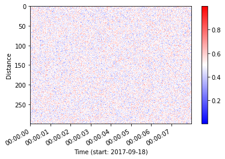

Quickstart¶
A quickstart for DASCore, a python library for fiber-optic sensing.
Patch¶
A section of contiguous (or nearly so) fiber data is called a Patch. These can be generated in a few ways:
1. Load an example patch (for simple demonstrations)¶
import dascore
pa = dascore.get_example_patch()
2. Load a file¶
We first download an example fiber file (you need an internet connection). Next, we simply read it into a Stream object then get the first (and only) patch.
# get a fiber file
import dascore
from dascore.utils.downloader import fetch
path = fetch("terra15_das_1_trimmed.hdf5") # path to a datafile
pa = dascore.read(path)[0]
3. Create from Arrays¶
Patches can also be created from numpy arrays and dictionaries. You need to specify:
The data array
The coordinates for labeling each axis
The attributes (optional)
import numpy as np
import dascore
from dascore.utils.time import to_timedelta64
array = np.random.random(size=(300, 2_000))
t1 = np.datetime64("2017-09-18")
attrs = dict(
d_distance=1,
d_time=to_timedelta64(1 / 250),
category="DAS",
id="test_data1",
time_min=t1,
)
coords = dict(
distance=np.arange(array.shape[0]) * attrs["d_distance"],
time=np.arange(array.shape[1]) * attrs["d_time"],
)
pa = dascore.Patch(data=array, coords=coords, attrs=attrs)
print(pa)
Processing¶
The patch has several methods which are intended to be chained together via a fluent interface.
import dascore
pa = dascore.get_example_patch()
out = (
pa.decimate(8) # decimate to reduce data volume by 8 along time dimension
.detrend(dim='distance') # detrend along distance dimension
.pass_filter(time=(None, 10)) # apply a low-pass 10 Hz butterworth filter
)
Visualization¶
import dascore
pa = dascore.get_example_patch()
pa.viz.waterfall(show=True)

<AxesSubplot:xlabel='Time (start: 2017-09-18)', ylabel='Distance'>